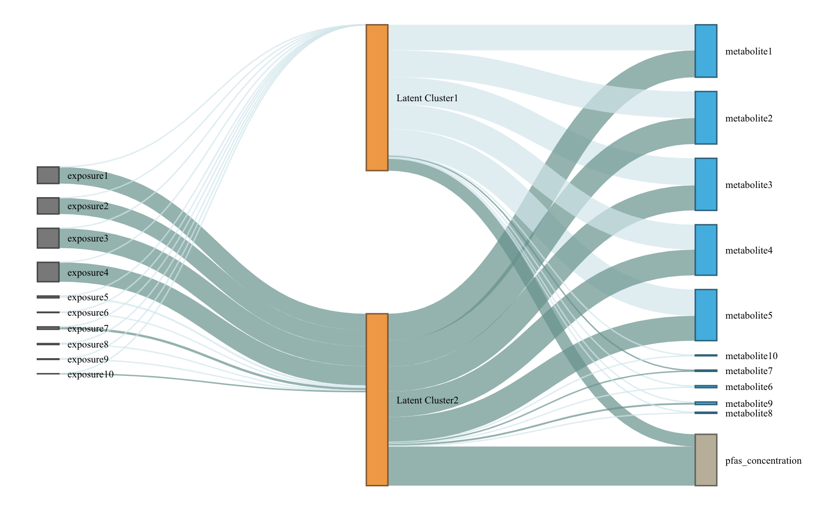

The LUCIDus package implements the statistical method LUCID proposed in the research paper A Latent Unknown Clustering Integrating Multi-Omics Data (LUCID) with Phenotypic Traits (Bioinformatics, 2020). LUCID conducts integrated clustering by using multi-view data, including exposures, omics data with/without outcome. LUCIDus features variable selection, incorporating missingness in omics data, visualization of LUCID model via Sankey diagram, bootstrap inference and functions for tuning model parameters.
Installation
You can install the development version of LUCIDus from GitHub with:
# install.packages("devtools")
devtools::install_github("USCbiostats/LUCIDus")
# install package with vignettes
devtools::install_github("USCbiostats/LUCIDus", build_vignettes = TRUE)Fit LUCID model
We use est.lucid() function to fit LUCID model.
library(LUCIDus)
# use simulated data
G <- sim_data$G
Z <- sim_data$Z
Y_normal <- sim_data$Y_normal
Y_binary <- sim_data$Y_binary
cov <- sim_data$Covariate
# fit LUCID model with continuous outcome
fit1 <- est.lucid(G = G, Z = Z, Y = Y_normal, family = "normal", K = 2, seed = 1008)
# fit LUCID model with binary outcome
fit2 <- est.lucid(G = G, Z = Z, Y = Y_binary, family = "binary", K = 2, seed = 1008)
# fit LUCID model with covariates
fit3 <- est.lucid(G = G, Z = Z, Y = Y_binary, CoY = cov, family = "binary", K = 2, seed = 1008)User should be aware of option useY. By default, useY = TRUE, which means we fit LUCID model in a supervised fashion and incorporate information of outcome to define clusters. On the other hand, by setting useY = FALSE, we are fitting LUCID model in an unsupervised fashion, only using information from exposure and omics data to define clusters.
# fit LUCID model without useing information from outcome
fit4 <- est.lucid(G = G, Z = Z, Y = Y_normal, family = "normal", K = 2, useY = FALSE, seed = 1008)For LUCID model, we use mclust method to optimize likelihood related to omcis data with respect to mean and covariance structure. By default, a VVV model is used to estimate covariance structure for omics data, which means the volume, shape and orientation of covariance matrices varies across different clusters. User can set modelName = NULL to let est.lucid select the optimal covariance model, or specify a specific covariance model for LUCID. Details of available models can be found in mclust::mclustModelNames under multivariate mixture section.
# fit LUCID model with automatic selection on optimal covariance models
fit5 <- est.lucid(G = G, Z = Z, Y = Y_normal, family = "normal", K = 2, modelName = NULL, seed = 1008)
# check the optimal model
fit5$modelName
# fit LUCID model with a specified covariance model
fit6 <- est.lucid(G = G, Z = Z, Y = Y_normal, family = "normal", K = 2, modelName = "EII", seed = 1008)In terms of initialization of EM algorithm, est.lucid uses either random initialization based on uniform distribution or a heuristic method based on mclust. By default, initialization of EM algorithm uses mclsut. However, if it takes long time, we recommend user turn to random initialization by setting init_par = "random.
# initialize EM algorithm by mclust
fit7 <- est.lucid(G = G, Z = Z, Y = Y_normal, family = "normal", K = 2, init_par = "mclust" , seed = 1008)
# initialize EM algorithm via randomization
fit8 <- est.lucid(G = G, Z = Z, Y = Y_normal, family = "normal", K = 2, init_par = "random" , seed = 1008)To ensure replicable results, user can set random seed by using the option seed. The LUCID model can be summarized via summary_lucid().
# summarize lucid results
summary_lucid(fit1)Visualization of LUCID model
We use a Sankey diagram to visualize LUCID model. In the Sankey diagram, each node represents a variable in LUCID model (exposure, omics data and outcome), each line corresponds to an association between two variables. The color of line indicates the direction of association (by default, dark blue refers to positive association while light blue refers to negative association) and the width of line indicates the magnitude of association (large effect corresponds to wider line).
# visualze lucid model via a Snakey diagram
plot_lucid(fit1)
knitr::include_graphics("man/figures/sankey.png")
# change node color
plot_lucid(fit1, G_color = "yellow")
plot_lucid(fit1, Z_color = "red")
# change link color
plot_lucid(fit1, pos_link_color = "red", neg_link_color = "green")LUCID incorporating missing omics data
The latest version of LUCID allows missingness in omics data. We consider 2 missing patterns in omics data: (1) list-wise missing pattern that only a subset of observations have measured omics data and (2) sporadic missing pattern that missingness is completely at random. We implement a likelihood partition for (1) and an integrated imputation based EM algorithm for (2).
# fit LUCID model with block-wise missing pattern in omics data
Z_miss_1 <- Z
Z_miss_1[sample(1:nrow(Z), 0.3 * nrow(Z)), ] <- NA
fit9 <- est.lucid(G = G, Z = Z_miss_1, Y = Y_normal, family = "normal", K = 2)
# fit LUCID model with sporadic missing pattern in omics data
Z_miss_2 <- Z
index <- arrayInd(sample(length(Z_miss_2), 0.3 * length(Z_miss_2)), dim(Z_miss_2))
Z_miss_2[index] <- NA
fit10 <- est.lucid(G = G, Z = Z_miss_2, Y = Y_normal, family = "normal", K = 2, seed = 1008) For sporadic missing pattern, est.lucid uses mclust::imputeData to initialize the imputation. The imputed omics data is also returned by est.lucid.
# imputed omics dataset
fit10$ZVariable selection
In many situations, using all variables for clustering analysis is not an optimal option. For example, some variables may not possess any information related to cluster structure. Including these non-informative variables only add ”noises” to cluster assignment and unnecessarily increases the model complexity. For situations of moderate or low dimensionality, variable selection is able to facilitate model interpretation and identify the correct cluster structure. The integrated variable selection for LUCID is built upon penalized EM algorithm. We adapt the penalty function proposed by Zhou et al. (Electronic journal of statistics, 2009)
# use LUCID model to conduct integrated variable selection
# select exposure
fit6 <- est.lucid(G = G, Z = Z, Y = Y_normal, CoY = NULL, family = "normal",
K = 2, seed = 1008, Rho_G = 0.1)
# select omics data
fit7 <- est.lucid(G = G, Z = Z, Y = Y_normal, CoY = NULL, family = "normal",
K = 2, seed = 1008, Rho_Z_Mu = 90, Rho_Z_Cov = 0.1, init_par = "random")Model selection
For clustering analysis, usually we need to specify the number of clusters a priori. For LUCID, we use Bayesian Information Criteria (BIC) to choose the optimal number of latent clusters. The strategy is to fit LUCID model over a grid of , and choose the optimal model with lowest BIC. This can be done via the wrapper function
lucid.
# tune lucid over a grid of K (note this function may take time to run)
tune_lucid <- lucid(G = G, Z = Z, Y = Y_normal, K =2:5)Check the tuning process by
> tune_lucid$tune_list
K Rho_G Rho_Z_Mu Rho_Z_Cov BIC
1 2 0 0 0 46917.94
2 3 0 0 0 47716.94
3 4 0 0 0 48520.86
4 5 0 0 0 49276.93The optimal model (K = 2) is returned as
tune_lucid$best_modelPrediction
There are 2 predictions related to LUCID - prediction on latent cluster and prediction on outcome. User can call predict_lucid to finish 2 tasks at the same time. The input of outcome is optional. If not provided, predict_lucid use exposre G and omics data Z to make prediction on latent cluster X (as shown in second example).
pred1 <- predict_lucid(model = fit1, G = G, Z = Z, Y = Y_normal)
pred2 <- predict_lucid(model = fit1, G = G, Z = Z)Bootstrap confidence interval (CI)
We use a bootstrap method to conduct inference for LUCID.
# conduct bootstrap resampling
boot1 <- boot.lucid(G = G, Z = Z, Y = Y_normal, model = fit1, R = 100)
# use 90% CI
boot2 <- boot.lucid(G = G, Z = Z, Y = Y_normal, model = fit1, R = 100, conf = 0.9)Diagnostic plot for bootstranp sampling is drawn by
# check distribution for bootstrap replicates of the variable of interest
plot(boot1$bootstrap, 1)